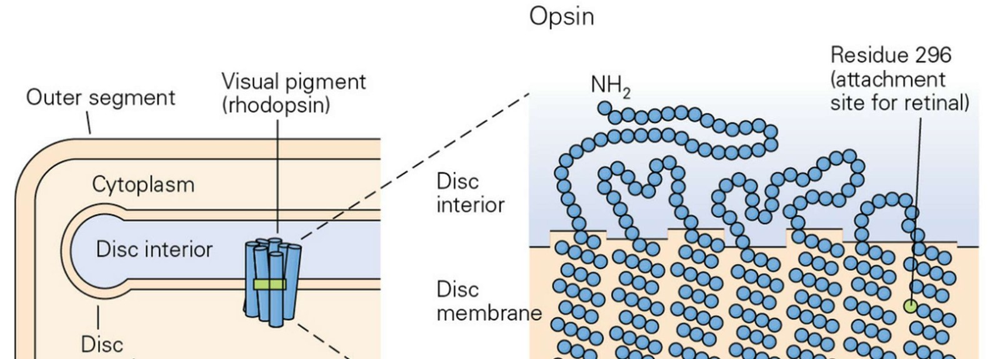
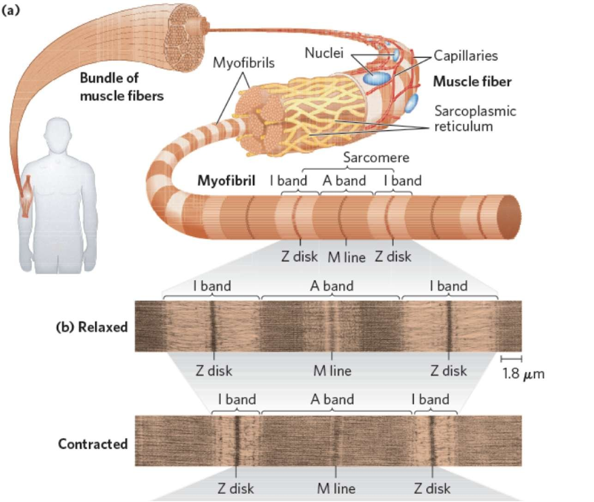

BIO105 · 第 7 章
生理系统的化学
Chemistry of Physiological Systems
虚线下划线为术语；悬停查看中文、英文与释义，完整词典见“术语”。
本章目录
本讲用三个系统展示“化学如何变成生理功能”：视觉把光异构化变成电信号，肌肉把钙信号变成机械力，味觉把分子识别变成膜电位变化。共同的主题是信号转导。
本章要点
- 视网膜由五层神经元与突触构成；视杆与视锥是感光细胞，颜色感知来自不同类型视锥的同时激活。
- 视紫红质 = 视蛋白（opsin）+ 11-cis-视黄醛；视黄醛经质子化 Schiff 碱共价结合在 Lys296 上。
- 光能被 11-cis-视黄醛吸收（约 250 kJ/mol），把 π 电子激发到 π*，驱动异构化为 all-trans。
- 光转导级联：Rh* → Gα → PDE → cGMP 下降 → Na⁺/Ca²⁺ 通道关闭 → 超极化。
- 神经肌肉接头以 ACh 作化学递质；肌球蛋白 II 经 ATP 结合、水解、力冲程完成滑动。
- 肌肉收缩的直接触发者是 Ca²⁺，不是 ATP；Ca²⁺ 结合肌钙蛋白，解除对横桥循环的抑制。
- Ca²⁺ 是普遍的第二信使：胞外 2 mmol/L、胞内 100 nmol/L，相差约 107 倍，由 Ca²⁺-ATPase 维持。
- 味觉中咸与酸直接作用于离子通道，苦、甜、鲜通过 GPCR 起作用。
7.1 视觉系统与视网膜
讲义从解剖开始。人眼把光折射到视网膜retina上，在中央凹fovea处聚焦最清晰；中央凹内密集排列着感光细胞photoreceptor。这个布局决定了视觉的分辨率分布：中央凹负责精细视觉，周边视网膜负责大范围探测。
视网膜不是一层简单的膜，而是五层不同的神经元与突触构成的处理网络。感光细胞接收光信号，经中间神经元传递，最终由视网膜神经节细胞retinal ganglion cell把信号送出眼球。感光细胞位于最深层，光必须先穿过前面的神经组织才能到达它们——这是脊椎动物视网膜的“倒装”结构。
两类感光细胞分工不同。视杆rod对光极敏感，适合暗光下的黑白视觉；视锥cone负责明光下的彩色视觉，并分为红、绿、蓝三种，各自对不同波长范围敏感。
颜色感知的原理，讲义用一句话概括：人对颜色的感知源于视网膜中不同类别感光细胞的同时激活。单一波长的光不会只激活一种视锥，而是按各自吸收光谱的比例同时激活三种视锥；大脑比较三者输出的相对大小，就“算出”了颜色。因此颜色不是光的物理属性，而是神经系统对三个通道相对强度的解码。
L7 p.4–7
7.2 视色素：视紫红质与视黄醛
光要被感知，先要被分子吸收。感光细胞中的视色素visual pigment是视紫红质rhodopsin，它由两部分组成：蛋白质部分视蛋白opsin与发色团 11-cis-视黄醛。蛋白质提供结合口袋与下游信号接口，发色团负责吸收光子。
视黄醛来自饮食。讲义给出一条完整的转化链：
- β-胡萝卜素（β-carotene）是前体，虚线标出其异戊二烯（isoprene）单位；
- 裂解与氧化得到 all-trans-视黄醛（all-trans-retinal）；
- 氧化可生成 all-trans-视黄酸（retinoic acid）；
- 还原可生成 all-trans-视黄醇（retinol），即维生素 A1；
- 在视觉通路中，醛基形式被转为 11-cis-视黄醛；
- 光照使 11-cis 变为 all-trans。
这条链解释了“缺乏维生素 A 会影响视力”的化学基础：没有视黄醛，就装不出视紫红质。也解释了为什么视黄醛的两种几何异构体是视觉的核心——整个视觉过程就是把一个双键的构型翻转，翻译成神经信号。
讲义给出能量数字：光能约 250 kJ/mol 把 11-cis-视黄醛转为 all-trans，由此触发视网膜细胞的电变化，最终导致神经冲动。250 kJ/mol 与第 6 章红光 einstein 的 171 kJ 相比更高，说明可见光光子的能量足以驱动这个异构化——但需要分子在吸收后把能量集中到那一个双键上。

L7 p.8–10
7.3 光异构化：π→π* 与结构证据
吸收光的本质是电子跃迁。讲义用分子轨道语言表述：光吸收把电子从 π 轨道（HOMO）激发到 π* 轨道（LUMO）。视黄醛的多烯链是共轭体系，π 电子离域在整条链上，因此 HOMO–LUMO 能隙落在可见光范围——这正是它能有颜色的原因（第 3 章的规则）。
但“π→π* 导致异构化”是一个机制假说，需要证据。讲义提出这个追问，并给出 2023 年发表于《Nature》615 卷的结构工作作为回答。要点如下：
- 视紫红质是光敏的 GPCR（light-sensitive GPCR），结构为七次跨膜螺旋束（seven-TM bundle）；
- 11-cis-视黄醛通过质子化 Schiff 碱（protonated Schiff base, PSB）与 Lys296 共价结合；
- 水分子在胞外区与胞内区之间形成关键的网络；
- 用时间分辨串行飞秒晶体学（TR-SFX）配合 X 射线自由电子激光（XFEL），可以在 1 ps 的时间尺度上捕捉中间态；
- 比较暗态、1 ps、100 ps 三个时刻的结构，以 3.7 Å 的截断距离判断哪些构象变化真正参与信号传递。
这套方法的意义在于：它把“光吸收 → 电子激发 → 构型翻转 → 蛋白构象改变”这条链在时间上拆开了。1 ps 是分子振动的时间尺度，能在这么短的时间内看到结构变化，说明异构化几乎是“瞬间”的，随后才是蛋白的缓慢松弛。这也是为什么视觉的初始反应如此之快。
Clean vector diagram in two panels: left panel shows a seven-transmembrane GPCR bundle in a lipid bilayer with 11-cis retinal bound through a protonated Schiff base to Lys296, water molecules drawn as small red circles forming a network; right panel shows the same pocket after a photon is absorbed, with the retinal straightened to all-trans and a curved arrow marking the rotation about the double bond. Flat 2D, thin 1.5 px strokes, muted slate blue and warm grey palette, white background, English labels, no cartoon, no gradient, no shadow.
L7 p.11–18
7.4 光转导：从光子到超极化
异构化之后，信号沿一条 G 蛋白级联放大。讲义用一张图列出全部参与者：GTP、鸟嘌呤（guanine）、cGMP、鸟苷酸环化酶（guanylyl cyclase, GC）、磷酸二酯酶（phosphodiesterase, PDE）、GMP。
级联的顺序，讲义用编号给出，分为兴奋与恢复两段：
- Rh（all-trans）：光激活的视紫红质；
- Gα：激活转导蛋白，GTP 结合；
- PDE：被 Gα 激活；
- cGMP → GMP：PDE 把 cGMP 水解为 GMP，胞内 cGMP 浓度骤降；
- Na⁺、Ca²⁺ 通道关闭 → 超极化；
- Ca²⁺ 被泵出；
- GTP → cGMP：鸟苷酸环化酶重新合成 cGMP；
- RK（视紫红质激酶）与 arrestin 使 Rh 失活；
- Rh 回到 11-cis 状态。
理解这条链的关键是符号的反转。光刺激导致通道关闭，膜电位变得更负（超极化），而不是去极化。这与大多数感觉神经元相反，是视觉转导的标志性特征。讲义用一对反义词标注：hyperpolarize 的对立面是 depolarize，而 resistance 的对立面是 conductance——注意这两个词对分别描述电位与电导，不要混用。
为什么通道关闭会导致超极化？因为在黑暗中，cGMP 维持着 Na⁺/Ca²⁺ 通道的开放，产生持续的内向电流，使感光细胞处于相对去极化的状态。光激活 PDE → cGMP 下降 → 通道关闭 → 内向电流消失 → 膜电位向 K⁺ 平衡电位靠拢 → 超极化。整条逻辑的枢纽是 cGMP 浓度的下降。
讲义还强调：膜电位由 Na⁺、K⁺、Ca²⁺ 共同调控，这些离子的跨膜梯度由ATP 依赖的泵维持。这意味着光转导虽然由光驱动，但其电学基础仍然是耗能的离子梯度——与第 8 章的神经元完全一致。
Clean vector pathway diagram of phototransduction in a photoreceptor outer segment: a photon arrow hitting rhodopsin, rhodopsin activating transducin G-alpha, G-alpha activating phosphodiesterase, phosphodiesterase converting cGMP to GMP, falling cGMP closing a cyclic-nucleotide-gated channel for sodium and calcium, and the resulting hyperpolarization marked on a small membrane potential trace; a recovery branch shows guanylyl cyclase refilling cGMP and rhodopsin kinase with arrestin shutting off rhodopsin. Flat 2D, thin 1.5 px strokes, muted slate blue and warm grey palette, white background, English labels, no cartoon, no gradient, no shadow.
L7 p.19–22
7.5 视觉通路的并行处理
视网膜输出的信号并不走一条统一的通路，而是分成多条并行的通道，各自处理不同的特征。讲义给出两条主要通路：
- 腹侧通路（ventral pathway）：负责物体识别，处理形状与颜色信息；
- 背侧通路（dorsal pathway）：负责运动，包含对运动方向选择性的细胞。
通路中的关键中继站包括外膝体（lateral geniculate nucleus, LGN）与中颞区（middle temporal area, MT）。前者是丘脑的视觉中继核，后者是背侧通路中处理运动的核心区域。
“并行处理”这个概念值得展开：同一条光信号进入视网膜后，被拆成形状、颜色、运动、深度等多个通道同时处理，而不是先形成一个完整的“图像”再分析。这种架构的优点是速度快、鲁棒性强；缺点是不同特征之间可能出现错配（视觉错觉的根源之一）。
L7 p.23–24
7.6 神经肌肉接头与肌球蛋白 II
从视觉转到肌肉。讲义先用“自上而下”的框架定位：大脑发出指令，经运动神经元传到神经肌肉接头neuromuscular junction，在那里发生化学传递。递质是乙酰胆碱（ACh）：ACh 结合肌细胞膜上的受体，通道开放，膜去极化（depolarize，与超极化相反），产生动作电位。
讲义特别标注“正反馈”（positive feedback）：ACh 引起的去极化会打开更多电压门控 Na⁺ 通道，进一步去极化，形成再生的动作电位。这与第 1 章“单个通道全或无、宏观电流叠加”的描述完全一致，只是尺度从单通道放大到了整个肌纤维。
兴奋之后是收缩。肌肉的结构层级是：肌原纤维myofibril由肌节sarcomere串联而成，肌节内交替排列着粗肌丝（肌球蛋白）与细肌丝（肌动蛋白）。肌浆网sarcoplasmic reticulum是肌肉中特化的内质网，包绕肌原纤维，储存 Ca²⁺。
执行收缩的马达蛋白是肌球蛋白 IImyosin II，一个大型马达蛋白。讲义引用了一个经典的体外实验：把纯化的肌球蛋白头部固定在载玻片上，加入用荧光鬼笔环肽（fluorescent phalloidin）标记的肌动蛋白丝，让它们与肌球蛋白头结合。在 ATP 存在下，肌动蛋白丝会沿肌球蛋白滑动——这直接证明了“滑动”而非“缩短”是收缩的机制。
横桥循环的化学步骤，讲义用四个状态标出：
- 结合（association）：肌球蛋白头结合到肌动蛋白上，形成横桥；
- 力冲程（power stroke）：头部构象改变，把细肌丝拉动一小段；
- 解离（dissociation）：ATP 结合到头部，使其与肌动蛋白分离；
- 复位：ATP 水解为 ADP + Pi，头部回到预冲程构象，准备下一次循环。
注意 ATP 的双重角色：它既是解离的触发者（ATP 结合导致分离），又是复位的能量来源（水解提供构象变化的能量）。因此横桥循环的每一步都离不开 ATP——既提供能量，也提供时序控制。

Clean vector cycle diagram of the myosin cross-bridge cycle with four numbered states arranged clockwise: ATP-bound myosin detached from actin, ATP hydrolysed to ADP and Pi with the head cocked, the head binding actin and releasing Pi to trigger the power stroke, and ADP release completing the stroke before the next ATP binds. A thin actin filament drawn as a helix on the right, a thick myosin filament on the left, arrows showing filament sliding. Flat 2D, thin 1.5 px strokes, muted slate blue and warm grey palette, white background, English labels, no cartoon, no gradient, no shadow.
L7 p.25–31
7.7 钙离子触发肌肉收缩
讲义提出一个尖锐的问题：ATP 是在线粒体中合成的，那么线粒体是否就是肌肉收缩的信号来源？答案是否定的。ATP 提供能量，但不提供“何时收缩”的指令；真正的触发者是钙离子Ca²⁺，作为第二信使second messenger。
机制的关键蛋白是肌钙蛋白troponin，一个 Ca²⁺ 结合蛋白。在静息状态下，肌动蛋白上的结合位点被遮蔽，横桥无法结合。当动作电位沿肌膜传入，触发肌浆网释放 Ca²⁺，Ca²⁺ 结合肌钙蛋白，引起构象改变，暴露肌动蛋白上的结合位点——讲义把这个过程称为“Ca²⁺ 诱导的结合”（Ca²⁺ induced association）。横桥随即结合、力冲程，肌肉收缩。
收缩的终止同样依赖 Ca²⁺ 的清除。肌浆网上的 Ca²⁺-ATPase 把胞质中的 Ca²⁺ 泵回腔内，胞质 Ca²⁺ 浓度下降，肌钙蛋白释放 Ca²⁺，结合位点重新被遮蔽，肌肉舒张。因此舒张也是一个耗能过程——这一点常被忽略：没有 ATP，肌肉既不能收缩也不能舒张。
把这一节与第 5 章连接起来看：线粒体提供的 ATP 支持 Ca²⁺ 泵的运转与横桥循环，但“开关”是 Ca²⁺ 浓度。这种“能量与信号分离”的设计在生物系统中非常普遍——能量随时可用，信号决定何时使用。
L7 p.32–35
7.8 味觉转导：两条不同的路径
讲义把味觉作为“化学信号”的第三个例子。味觉的感受器是舌上的味蕾taste bud。
五种基本味觉按转导机制分成两类，这是本节的核心：
- 咸与酸：味物质直接激活离子通道，属于离子型ionotropic转导；
- 苦、甜、鲜：味物质激活G 蛋白偶联受体（GPCR），属于代谢型metabotropic转导。受体激活后经 G 蛋白与第二信使级联，最终导致 Ca²⁺ 信号与递质分泌。
这个二分法有实验支持。讲义引用 2002 年《Nature》416 卷 199–202 页的工作：用钙敏感染料 Fura-2 检测味觉细胞是否对味物质产生 Ca²⁺ 响应，结果甜、鲜、苦都能引起 Ca²⁺ 升高，而咸与酸不依赖这条通路。这直接证明了“两类转导机制”的划分。
两类机制的能力差别值得注意。GPCR 通路提供了放大：一个受体可以激活多个 G 蛋白，一个 G 蛋白可以激活多个效应分子，因此极低浓度的味物质就能被检测到。离子型通路则更直接、更快，检测的是基本的离子环境。这种“慢而灵敏”与“快而直接”的分工，是感觉系统的常见设计。
L7 p.36–39
7.9 钙作为第二信使：梯度、GPCR 与振荡
讲义最后把 Ca²⁺ 提升为普遍原理。先看数量级：
胞外比胞内高约一千万倍。这个巨大的梯度是靠钙泵Ca²⁺-ATPase维持的：它持续把 Ca²⁺ 从胞质泵到胞外或泵回内质网，消耗 ATP（ATP → ADP + HPO42−）。因为静息时胞质 Ca²⁺ 极低，任何一次释放都会造成局部浓度的剧烈升高——这就是 Ca²⁺ 能作为信号的原因：信噪比极高。
GPCR 如何升高 Ca²⁺？讲义给出七步级联：
- GPCR 结合配体；
- 激活 Gqα；
- 激活磷脂酶 C（phospholipase C, PLC）；
- PLC 把 PIP2 水解为 IP3 与 DG（二酰甘油）；
- IP3 结合内质网上的 IP3 受体，Ca²⁺ 通道开放，Ca²⁺ 释放入胞质；
- DG 与 Ca²⁺ 共同激活蛋白激酶 C（PKC）；
- PKC 磷酸化下游靶蛋白，改变细胞功能。
这条通路把“一个分子结合受体”翻译成“胞内 Ca²⁺ 升高”，再由 Ca²⁺ 与 PKC 执行具体反应。它与 7.4 节的光转导级联结构相同：受体 → G 蛋白 → 效应酶 → 第二信使 → 通道/激酶。这是 GPCR 信号的一般模板。
Ca²⁺ 信号还有一个特征：振荡。讲义引用实验，用 Fura-2 测量发现加入激动剂去甲肾上腺素（norepinephrine）后，[Ca²⁺] 呈现周期性的振荡，而不是一次性的升高后归于平静。讲义在这里只指出振荡现象本身；它提示 Ca²⁺ 信号携带的信息不只是“高低”，还包括时间上的模式。
Fura-2 本身是一个值得记住的工具：它是一种 Ca²⁺ 敏感染料，对 Ca²⁺ 的 Kd = 224 nM，恰好落在细胞静息 Ca²⁺ 浓度（约 100 nM）附近，因此能灵敏地报告生理范围内的变化。发明者 Roger Y. Tsien 因此获得 2008 年诺贝尔化学奖。
L7 p.40–43